Playa Delfines
Spiaggia iconica con mare turchese e sabbia bianca, tra le più belle di Cancún.
Ingresso: gratuito
⭐ 4.8 - Paradiso caraibico
Itinerario tra mare caraibico, cultura Maya e natura selvaggia
2 Giorni
2 Persone
€900
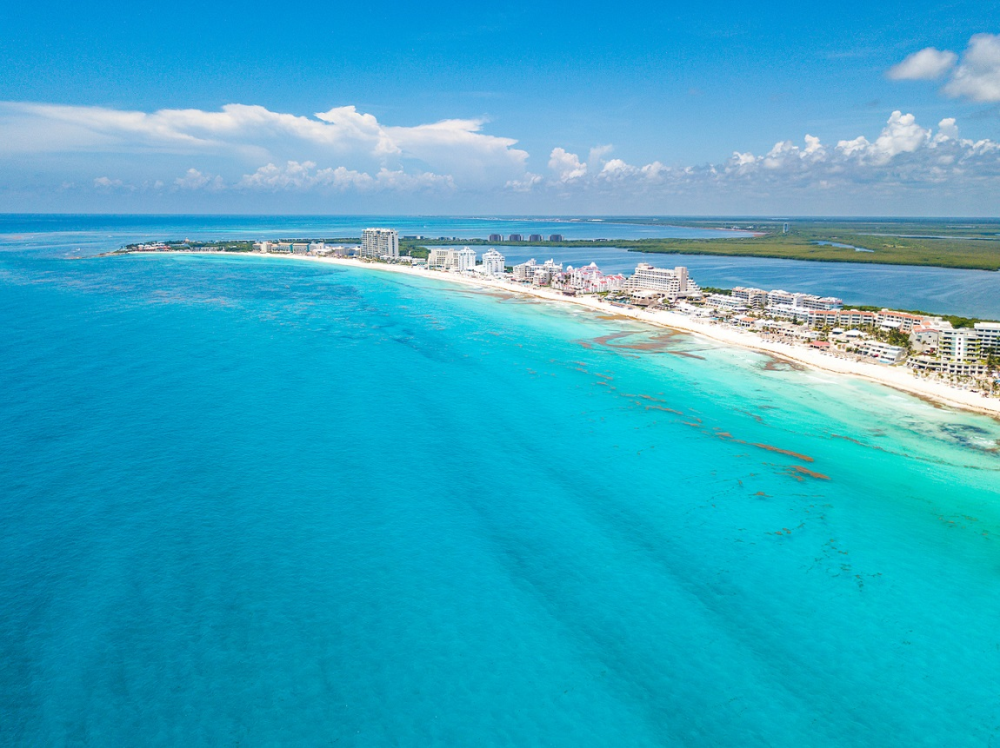
Spiaggia iconica con mare turchese e sabbia bianca, tra le più belle di Cancún.
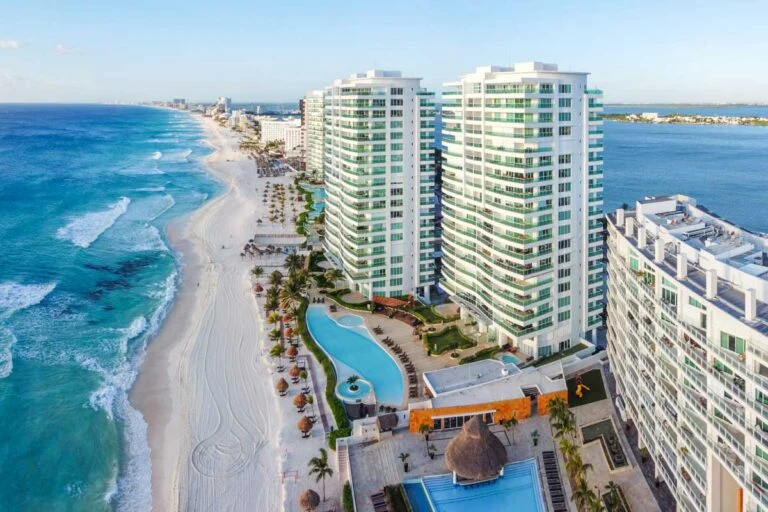
Cuore turistico di Cancún con resort, spiagge e locali sul mare.
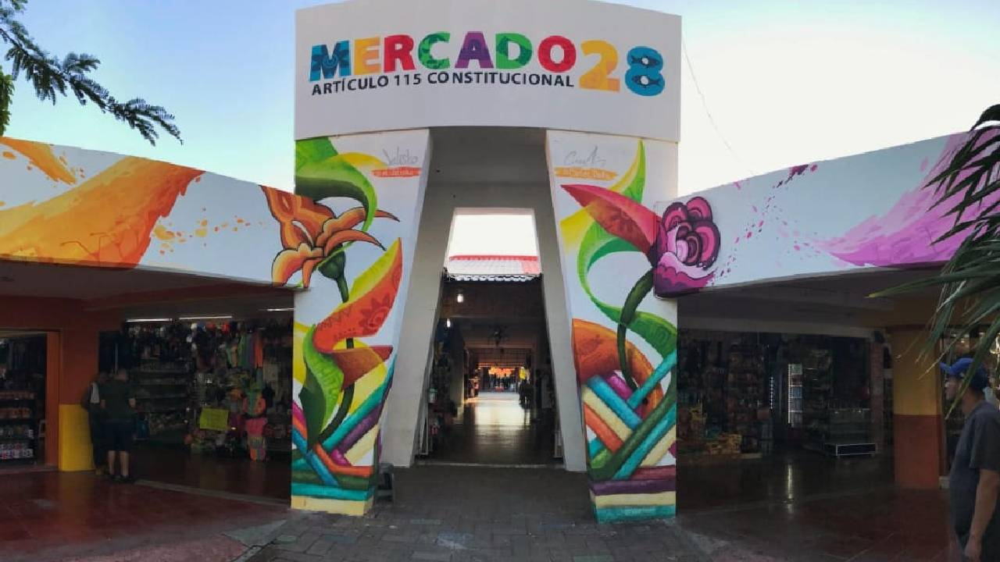
Mercato locale per souvenir, street food e artigianato messicano.
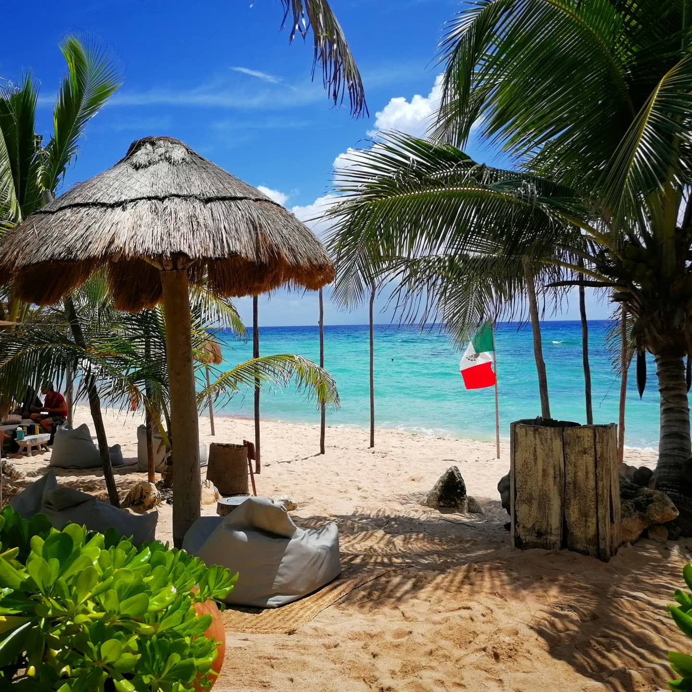
Relax su lettini fronte mare con cocktail e musica tropicale.
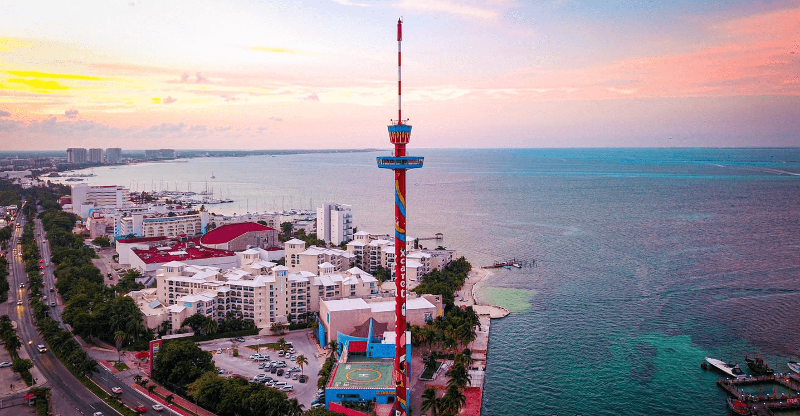
Torre panoramica alta 80 metri che offre una vista completa sulla costa caraibica di Cancún.
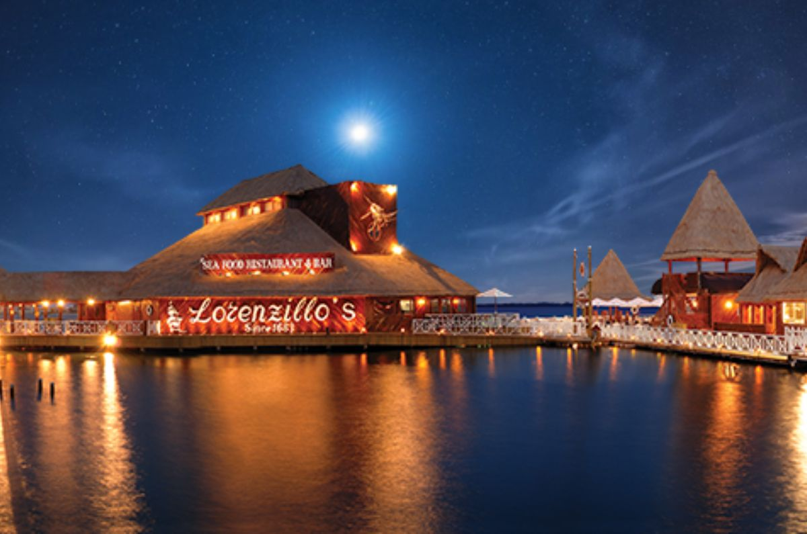
Storico ristorante sul mare famoso per aragoste fresche e cucina messicana di alta qualità.

Una delle 7 meraviglie del mondo moderno e sito Maya storico.
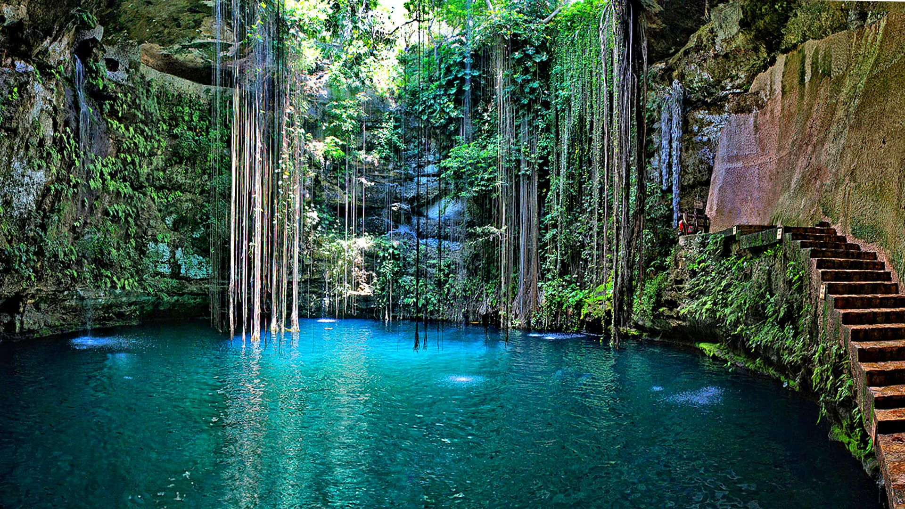
Piscina naturale sotterranea immersa nella giungla messicana.
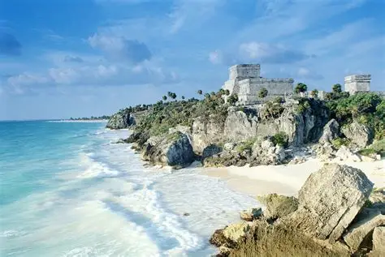
Rovine Maya sul mare con vista spettacolare sul Caribe.
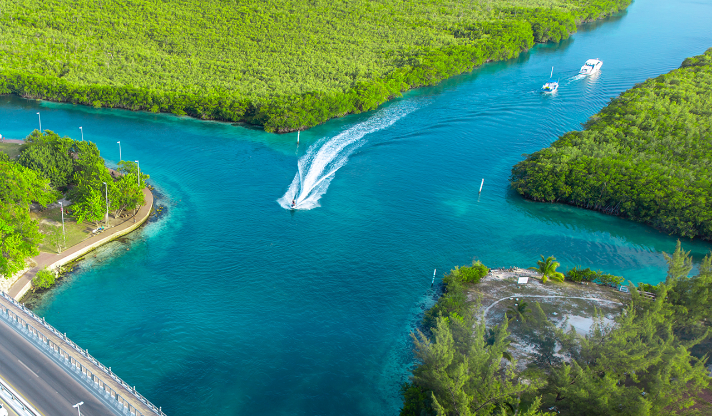
Natura, kayak e tramonti spettacolari nella laguna di Cancún.
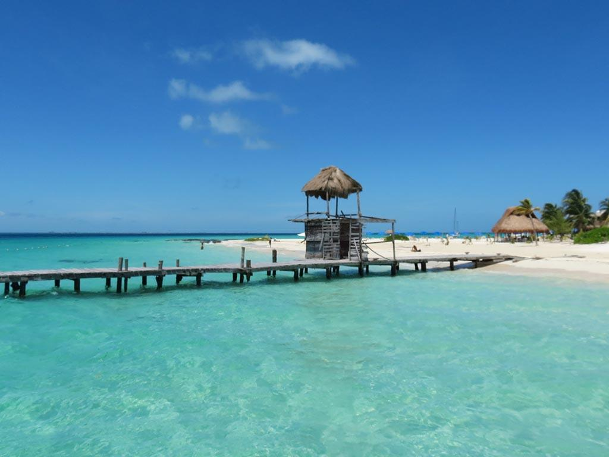
Piccola isola tropicale raggiungibile in traghetto, famosa per spiagge paradisiache e snorkeling.
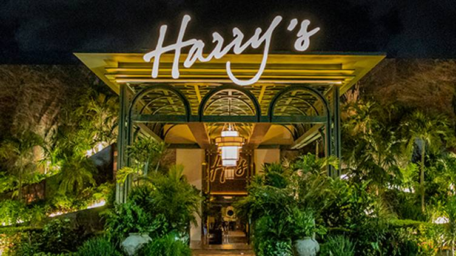
Ristorante elegante della Hotel Zone, famoso per bistecche premium, pesce e vista sulla laguna.
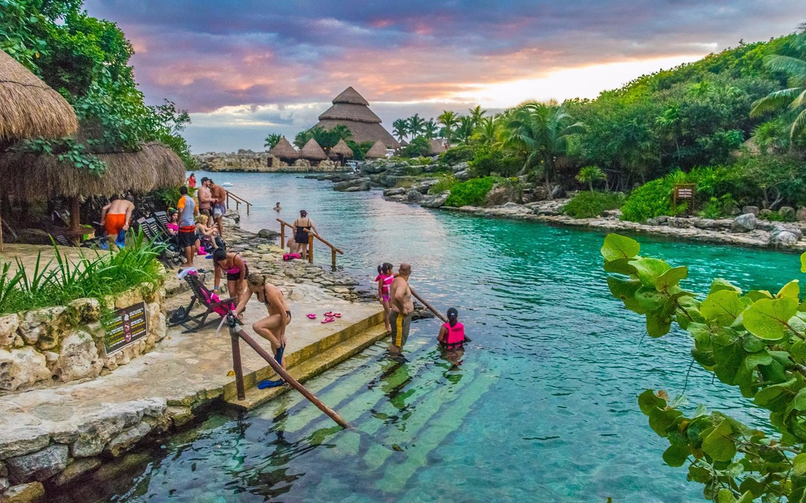
Parco eco-archeologico che combina natura, cultura messicana e attività acquatiche.
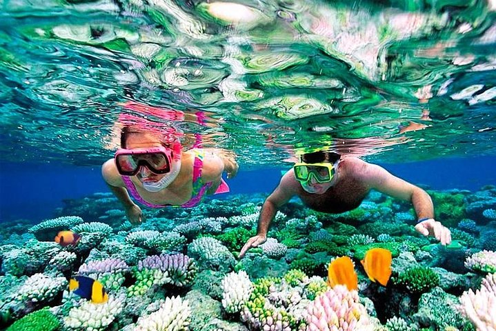
Escursione guidata per ammirare pesci tropicali e coralli nei fondali caraibici.
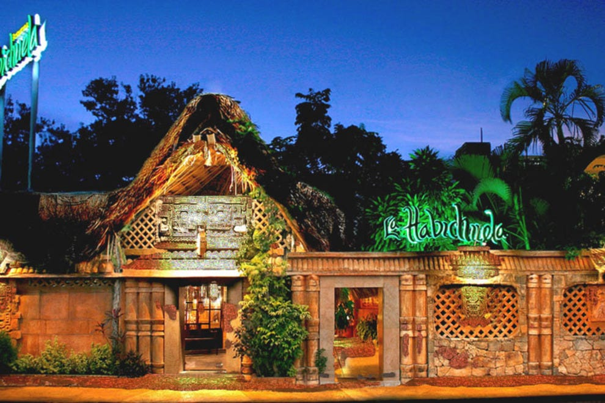
Ristorante storico di Cancún famoso per cucina messicana tradizionale e atmosfera tropicale.
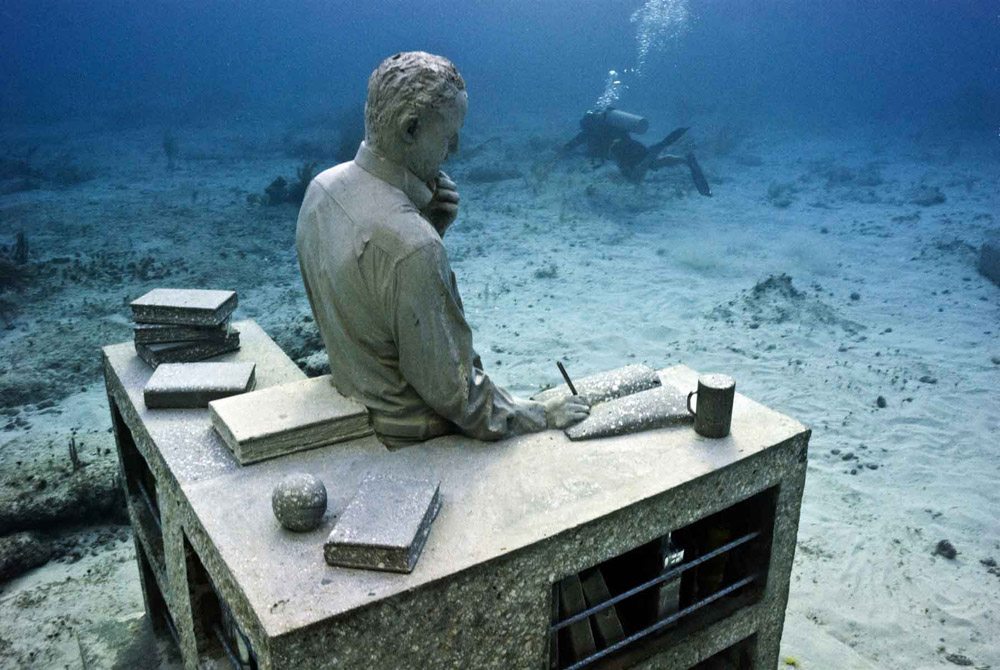
Museo sommerso con oltre 500 sculture visibili tramite immersioni o tour in barca.
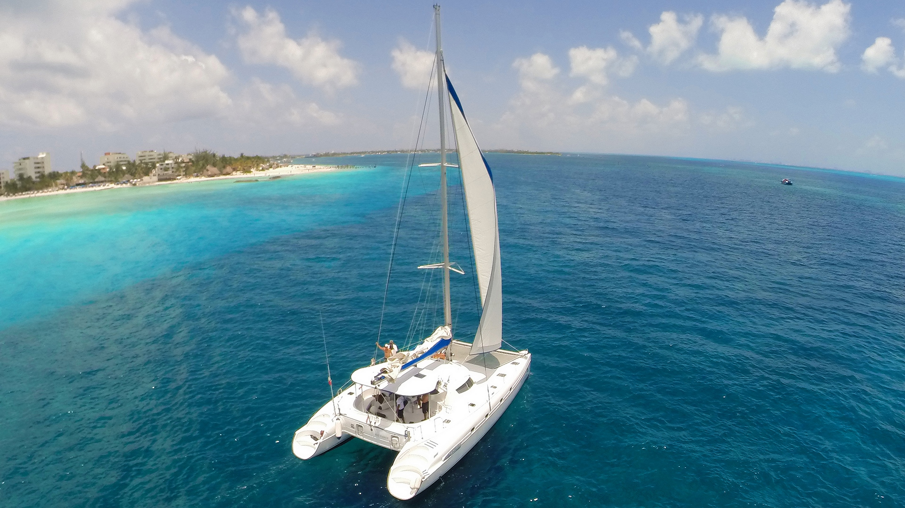
Navigazione nel Mar dei Caraibi con soste per nuotare e ammirare il panorama.
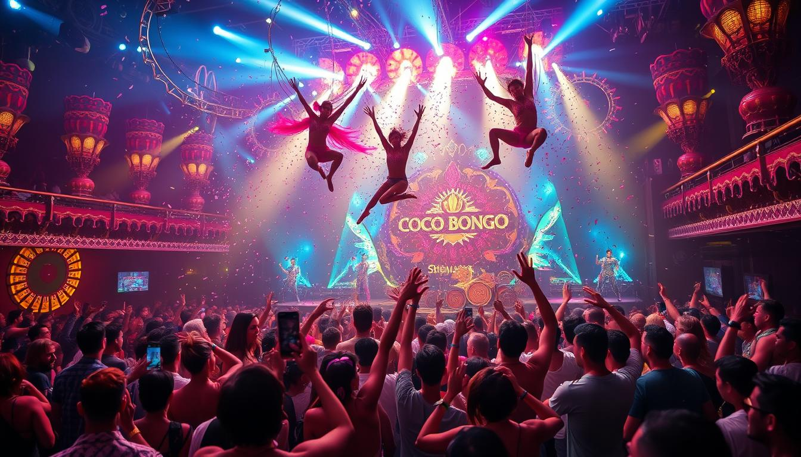
Locale iconico di Cancún con spettacoli acrobatici, musica e intrattenimento serale.
Attrazioni €335
Cibo (2 persone) €400
Trasporti €250
Spese extra €315